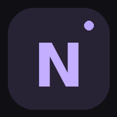

YOUR PERSONAL SOUND
NOIR MUSIC.
♫
MUSIC FOR YOUR MOMENT
Найди свой звук.
Ищи любимые песни и слушай доступные превью.
Поиск по каталогу iTunes / Apple Music
Результаты поиска
Введи название песни или исполнителя выше.
NOW PLAYING

Пока ничего не играетВыбери трек
0:000:30
Доступные музыкальные фрагменты
NOIR MUSIC · FIND YOUR SOUND